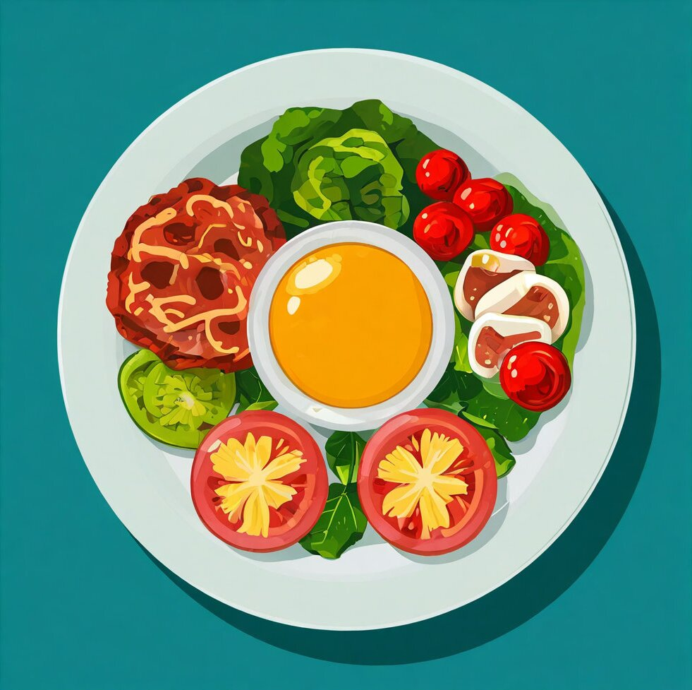

Загрузка...

–ü—Ä–∏–µ–º –ø–∏—â–∏:
—
–¢–∏–ø –±–ª—é–¥–∞:
—
Ингредиенты
Шаги приготовления
✏ Редактировать
üìÑ –°–∫–∞—á–∞—Ç—å PDF
üì¢ –ü–æ–¥–µ–ª–∏—Ç—å—Å—è
üè† –ù–∞ –≥–ª–∞–≤–Ω—É—é